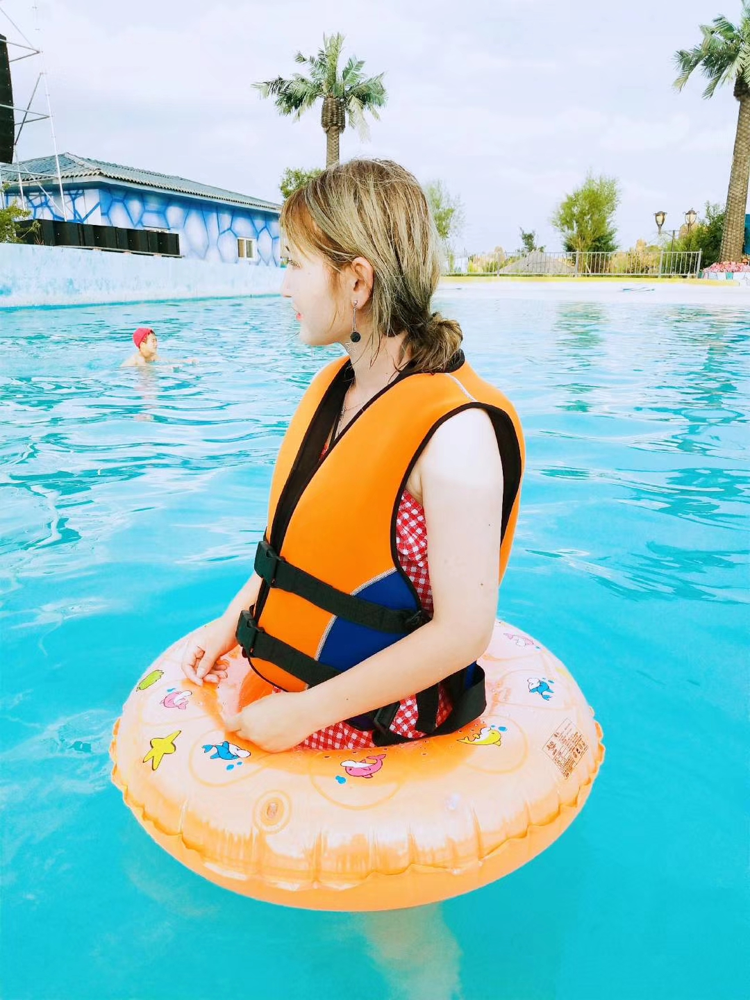
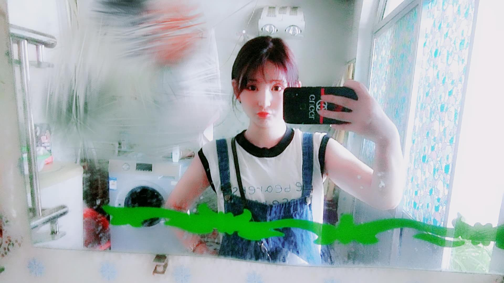
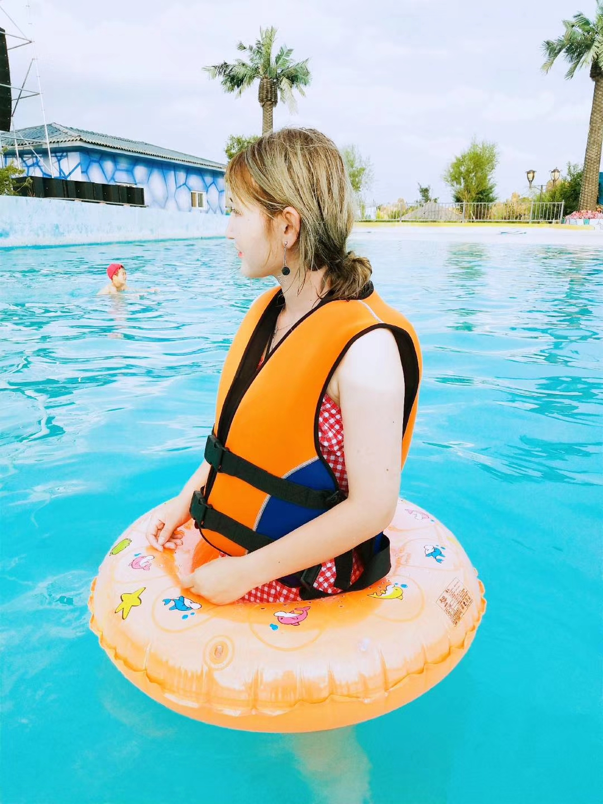
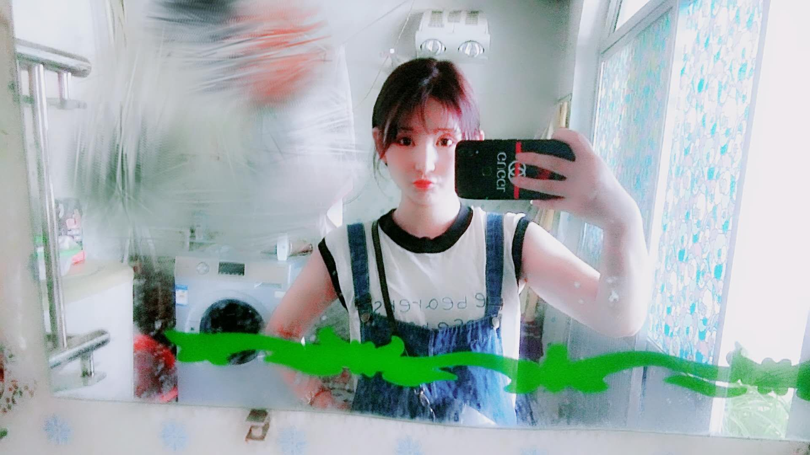

您现在的位置是：首页 > my|love > 详情网站首页my|love
个人博客，属于我的小世界！
简介个人博客，用来做什么？我刚开始就把它当做一个我吐槽心情的地方，也就相当于一个网络记事本，写上一些关于自己生活工作中的小情小事，也会放上一些照片，音乐。每天工作回家后就能访问自己的网站，一边听着音乐，一边写写文章。
在某一天友情和爱情碰见。爱情问友情：世上有我了，为什么还要有你的存在?友情笑着说：爱情会让人们流泪，而友情的存在就是帮人们擦干眼泪!朋友就是：偶尔会为你担心、向你关心、替你?心、想你开心、逗你开心、请你放心。朋友之间，懂得关怀才是难得。有些感情，在拥有时并不会显露，可万一会失去就痛不欲生。因为感情最大的平稳，就是相处。你每天日子过的很好，根本不会想这份情有多重。可爱情最大的恐怖，就是失去。当面对失去的风险时，那种痛苦的沉重才会显现。所以，别嫌爱的不够深。能够不分开，就已经是最好了。
许多人谈恋爱都很快，但分手却更快。有些人爱上很慢，却真能一直爱下去。其实相爱只是种情绪，当你被情绪控制时，总会瞬间爱上别人。但生活却很漫长，它是情绪消退后的漫漫经历。你真的要找个一生的伴侣，千万不能只是爱上。好爱人，是用一瞬间爱上，然后用一生来负责在不知不觉中，我突然有一种这样的感觉，不是不爱，是不能爱。走进一个人的世界，哭着，想着，恋着，笑着，讲述着，你总是看着，没有说过一句话。因为有你，所以渴望。但我从那些片只语中听到了失望，于是说服自己习惯独处，习惯一个人默默行走。不是不想爱，是不能爱。因为怕伤人，也怕被伤。
女人找男人找未来，男人找女人找现在，女人比男人心理上更依赖，所以女人看男人，看内涵和背景，长相是次要的，内涵决定未来发展潜力，背景决定未来生活状态;男人看女人，先看外表和个性，喜欢上了可以不计后果。男人喜欢上女人，什么身份都敢娶，女人喜欢上男人，没有未来通常不嫁!有时候，你很想念一个人，但你不会打电话给他。打电话给他，不知道说甚么好，还是不打比较好。想念一个人，不一定要听到他的声音。听到了他的声音也许就是另一回事。想像中的一切往往比现实稍微美好一点。想念中的那个人也比现实稍微温暖一点。雨后的彩虹挂于天际，那美丽耀目的七色流光被雨水涤荡得亮力鲜明，它总是在狂风骤雨之后才向人们展现它色彩斑斓的身影。只有经历过风雨的洗礼，生命才更美丽，才更能显示出它宝贵而华美的价值。
假如人生不曾相遇，我还是那个我，偶尔做做梦，然后，开始日复一日的奔波，淹没在这喧嚣的城市里。 我不会了解，这个世界还有这样的一个你，只有你能让人回味，也只有你会让我心醉。 假如人生不曾相遇，我不会相信，有一种人可以百看不厌，有一种人一认识就觉得温馨。世界教给我们太多，却也让我们迷茫，以至于我们害怕再往前走就是陷阱，相信一个人就会受到欺骗，恐惧拥抱玫瑰就会被伤害，可是亲爱的，不往前走你怎么知道前方有彩虹，不去相信他人又怎会被他人相信，不去拥抱玫瑰又怎会闻到芳香。世间的一切本就相对，也并没有绝对的公平，但我们要记住，上帝爱着我们，只是我们未曾发觉。

杯子，被倒进开水，滚烫的感觉，这就是恋爱感觉。水变温了，杯子很舒服，这是生活感觉。水变凉了，杯子害怕，也许这就是失去感觉。水彻底的凉，杯子难受，把水倒出。杯子舒服了，但不小心掉在地上，摔成一片一片的，发现每一片上都有水的痕迹，知道心里还爱着水，想再爱一次，却不可能了。爱情有时候是这样，你懂的越多，就会被伤的越深。而你被伤的越深，就会懂的更多。到最后你会发现，其实真正能陪你到老的那个人，是什么都不需要你懂的那一个。让你活的没心没肺，才是最好的那个人。
所有的感情，都有可以忍耐的底线。每个人的底线都不相同，但总有一条安全线存在。女人作也好，折腾也好，千万别越过男人心里的底线。男人暧昧也好，自私也好，也千万别挑战女人的底线。感情不是无限的，总，会被一次次的伤害所耗尽。珍惜每一寸的爱情，因为不可逆转。相爱和相守，是两件完全不同的事。相爱何其容易，只要看对眼，只要有感觉，分分钟都可以爱在一起。但相守呢？要的却是容忍，是相互的关心和理解。相爱容易相守难。你找个爱你的人，是一时。找个愿意守护你的人，才是一世。所以相守不止是相爱那么简单。相守是爱成习惯。》

许多人谈恋爱都很快，但分手却更快。有些人爱上很慢，却真能一直爱下去。其实相爱只是种情绪，当你被情绪控制时，总会瞬间爱上别人。但生活却很漫长，它是情绪消退后的漫漫经历。你真的要找个一生的伴侣，千万不能只是爱上。好爱人，是用一瞬间爱上，然后用一生来负责在不知不觉中，我突然有一种这样的感觉，不是不爱，是不能爱。走进一个人的世界，哭着，想着，恋着，笑着，讲述着，你总是看着，没有说过一句话。因为有你，所以渴望。但我从那些片只语中听到了失望，于是说服自己习惯独处，习惯一个人默默行走。不是不想爱，是不能爱。因为怕伤人，也怕被伤。
女人找男人找未来，男人找女人找现在，女人比男人心理上更依赖，所以女人看男人，看内涵和背景，长相是次要的，内涵决定未来发展潜力，背景决定未来生活状态;男人看女人，先看外表和个性，喜欢上了可以不计后果。男人喜欢上女人，什么身份都敢娶，女人喜欢上男人，没有未来通常不嫁!有时候，你很想念一个人，但你不会打电话给他。打电话给他，不知道说甚么好，还是不打比较好。想念一个人，不一定要听到他的声音。听到了他的声音也许就是另一回事。想像中的一切往往比现实稍微美好一点。想念中的那个人也比现实稍微温暖一点。雨后的彩虹挂于天际，那美丽耀目的七色流光被雨水涤荡得亮力鲜明，它总是在狂风骤雨之后才向人们展现它色彩斑斓的身影。只有经历过风雨的洗礼，生命才更美丽，才更能显示出它宝贵而华美的价值。
假如人生不曾相遇，我还是那个我，偶尔做做梦，然后，开始日复一日的奔波，淹没在这喧嚣的城市里。 我不会了解，这个世界还有这样的一个你，只有你能让人回味，也只有你会让我心醉。 假如人生不曾相遇，我不会相信，有一种人可以百看不厌，有一种人一认识就觉得温馨。世界教给我们太多，却也让我们迷茫，以至于我们害怕再往前走就是陷阱，相信一个人就会受到欺骗，恐惧拥抱玫瑰就会被伤害，可是亲爱的，不往前走你怎么知道前方有彩虹，不去相信他人又怎会被他人相信，不去拥抱玫瑰又怎会闻到芳香。世间的一切本就相对，也并没有绝对的公平，但我们要记住，上帝爱着我们，只是我们未曾发觉。

杯子，被倒进开水，滚烫的感觉，这就是恋爱感觉。水变温了，杯子很舒服，这是生活感觉。水变凉了，杯子害怕，也许这就是失去感觉。水彻底的凉，杯子难受，把水倒出。杯子舒服了，但不小心掉在地上，摔成一片一片的，发现每一片上都有水的痕迹，知道心里还爱着水，想再爱一次，却不可能了。爱情有时候是这样，你懂的越多，就会被伤的越深。而你被伤的越深，就会懂的更多。到最后你会发现，其实真正能陪你到老的那个人，是什么都不需要你懂的那一个。让你活的没心没肺，才是最好的那个人。
所有的感情，都有可以忍耐的底线。每个人的底线都不相同，但总有一条安全线存在。女人作也好，折腾也好，千万别越过男人心里的底线。男人暧昧也好，自私也好，也千万别挑战女人的底线。感情不是无限的，总，会被一次次的伤害所耗尽。珍惜每一寸的爱情，因为不可逆转。相爱和相守，是两件完全不同的事。相爱何其容易，只要看对眼，只要有感觉，分分钟都可以爱在一起。但相守呢？要的却是容忍，是相互的关心和理解。相爱容易相守难。你找个爱你的人，是一时。找个愿意守护你的人，才是一世。所以相守不止是相爱那么简单。相守是爱成习惯。》

上一篇：作为一个设计师,如果遭到质疑你是否能恪守自己的原则?
下一篇：返回列表